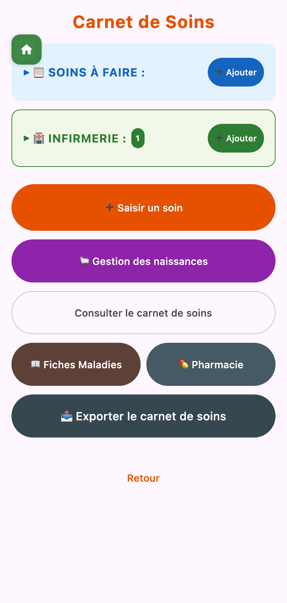
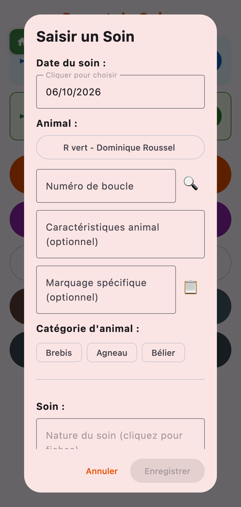
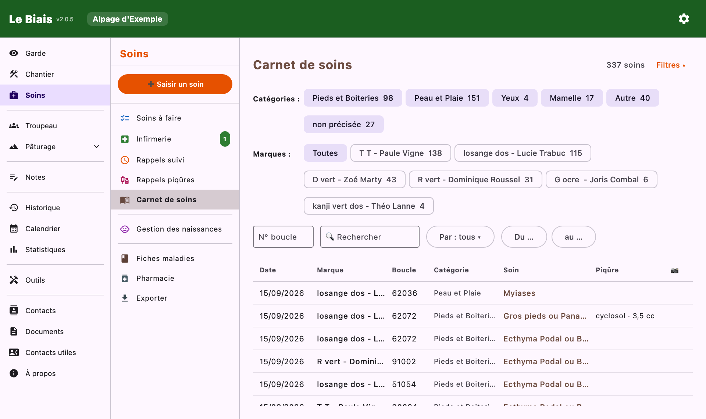

Documentation
Documentation
Saisir vite, retrouver facilement : le carnet de soins, les rappels, l'infirmerie et la pharmacie.
➕ Saisir un soin ouvre un formulaire qui se remplit de haut en bas :
+ Ajouter un autre soin pour cette bête enchaîne plusieurs soins sur le même animal sans ressaisir son identité.


Une bête repérée en garde, qu'on ne peut pas attraper tout de suite ? Ajouter un soin à faire note la marque, la boucle si on l'a, une description de l'animal, ce qu'il faudra faire, et une photo.
Les fiches trop anciennes sont supprimées automatiquement, après un délai réglable dans les paramètres (Soins à faire).
Ils apparaissent dans l'écran Soins et dans le calendrier. Marquer comme Fait ouvre un nouveau soin déjà rempli avec l'animal et le soin précédent ; l'enregistrer solde le rappel.
La liste des pensionnaires, avec leur motif. Une bête peut y entrer par un soin, par une naissance, ou directement (Placer au parc infirmerie). Depuis sa fiche : Voir son carnet et Sortir du parc.
Consulter le carnet de soins présente tous les soins en registre. Les filtres se combinent : période, marques, catégories de pathologie, numéro de boucle, catégorie d'animal, personne qui a soigné, et recherche libre. Chaque ligne s'ouvre pour être relue ou modifiée.
📤 Exporter le carnet de soins produit, pour une période, des marques et des catégories choisies, un fichier PDF ou TXT : récapitulatif par pathologie, marques et numéros d'exploitation, puis liste chronologique détaillée. De quoi transmettre à chaque éleveur ce qui concerne ses bêtes.
L'export général propose en plus des fiches récapitulatives des soins par marque.

Un aide-mémoire que vous construisez : pour chaque pathologie, sa catégorie, la cause, ce qu'on observe, ce qu'on fait, une remarque et des photos d'illustration. Précieux pour la personne qui prend le relais.
L'inventaire des produits : nom, type (antibiotique, anti-inflammatoire, huile essentielle, poudre, autre), date d'ouverture, stock, remarques. Deux cases comptent pour la saisie des soins :
Un produit dont le stock est à zéro est signalé « en rupture ».